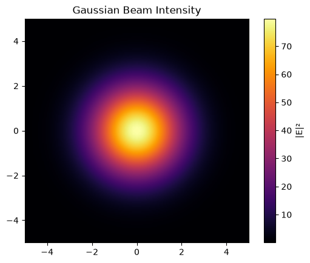

Welcome to VectorWaves
VectorWaves is a Python library for constructing and analyzing electromagnetic fields through discrete plane-wave expansions.
The Physics
Classical light is fundamentally an electromagnetic wave. In vacuum, electromagnetic fields admit a plane-wave decomposition, and VectorWaves is built around this principle. It provides a framework for constructing, computing, and analyzing fully three-dimensional vector fields and their topology.
VectorWaves constructs optical sources through plane-wave modes. These modes are sampled over a specified solid angle using Fibonacci-sphere quadratures. This enables the generation of a wide variety of fields, including: - Monochromatic sources with prescribed spatial structure (Gaussian, Laguerre-Gaussian, speckle, custom profiles, etc.) - Polychromatic fields with arbitrary spectral distributions (Gaussian, Lorentzian, custom profiles, etc.) - Fully three-dimensional polarization states, allowing for the analysis of vector-specific phenomena like polarization singularities.
By representing fields via their angular spectrum, we can exactly propagate fields to any arbitrary plane or point in 3D space, without paraxial approximations or grid-spacing limitations.
Workflow
The computational workflow is driven by a hierarchical configuration system. Before computing any fields, you specify the physical system and numerical parameters using a Config object.
Then, workflow follows this pattern:
Config → BeamMaker → Beam → FieldEngine → FieldResult
For convenience, helper functions like vw.setup_engine(config) abstract away the intermediate BeamMaker and Beam steps, taking you straight to a computable engine.
Basic Usage: Generating a Gaussian Beam
To illustrate the workflow, let's generate a simple Gaussian beam and evaluate its intensity on a transverse plane.
import matplotlib.pyplot as plt
import vectorwaves as vw
# 1. Specifying the system
config = vw.get_config()
# Set observation plane parameters
config.op.size = (1.0, 1.0)
config.op.spacing = 0.01
# Set source parameters
config.source.wavelength = 1.0
config.source.num_modes = 15000
# Define the beam as a Gaussian in k-space
config.source.k_space.gaussian(sigma_k_perp=1.5)
# Turn off random stochastic phase/amplitude (which are enabled by default for speckles)
config.source.randomize.off()
# 2. Constructing the engine
engine = vw.setup_engine(config)
# 3. Computing fields at the beam waist (z=0)
result = engine.compute_on_op(z=0.0)
# 4. Plotting intensity
plt.imshow(
result.intensity_E,
cmap="inferno",
extent=engine.op_extent,
origin="lower"
)
plt.colorbar(label="|E|²")
plt.title("Gaussian Beam Intensity")
plt.show()
Output

Next Steps
To dive deeper into the physics and capabilities of VectorWaves, explore the tutorials:
- Scalar Fields & Pulses: Verifying known scalar-field phenomenology, moving from paraxial to isotropic limits, understanding Wolf-type vectorial effects, and exploring polychromatic pulses.
- Vector Fields & Singularities: Constructing instantaneous E, B, and Poynting vector fields, decomposing into left/right circular bases, and tracking topological defects (C-points) in speckle fields.
For details about underlying mathematics such as Fibonacci-sphere sampling, parallel transport, or singularity refinement check the Physics Details page.